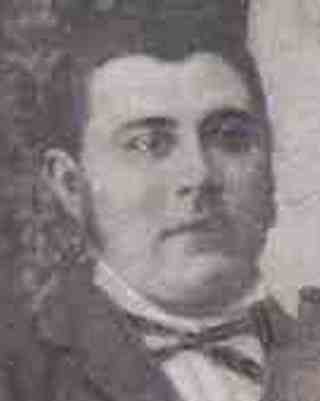

Garlick, Henry (Harry) William
| Birth Name | Garlick, Henry (Harry) William | |
| Nickname | Harry William Garlick | |
| Gender | male | |
| Relationship | granduncle | |
| Common Ancestor | Garlick, Matthew (Mathew) |  |
Events
Map
Parents


Families
| Married | Wife | Abbey, Christina |
| Marriage | Henry (Harry) William and Christina Garlick, 1928 |